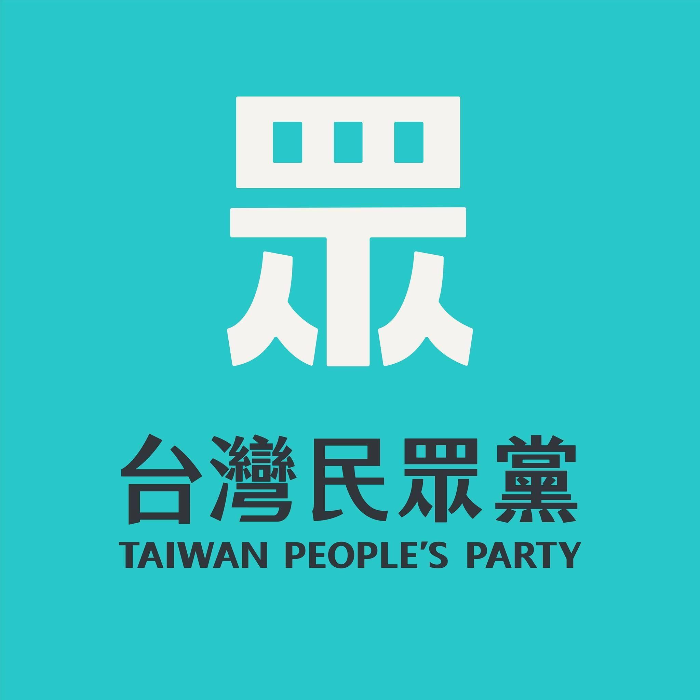

台灣民眾黨

台灣民眾黨，簡稱民眾黨[1][8][9]，是中華民國的一個政黨，2019年由柯文哲、蔡壁如等人發起、組建，於2019年8月23日經內政部審核通過成為中華民國第350個政黨[10]。其黨名啟發於蔣渭水、林獻堂等人於1927年創立之臺灣民眾黨，然而與前述政黨之間並無任何實質的繼承關係。2020年，第十屆立委選舉，政黨票獲得158萬餘票，取得立法院席次5席並成為第三大黨，僅次於民主進步黨、中國國民黨兩黨。
現任黨主席:柯文哲
Back
GO TO FirstSection